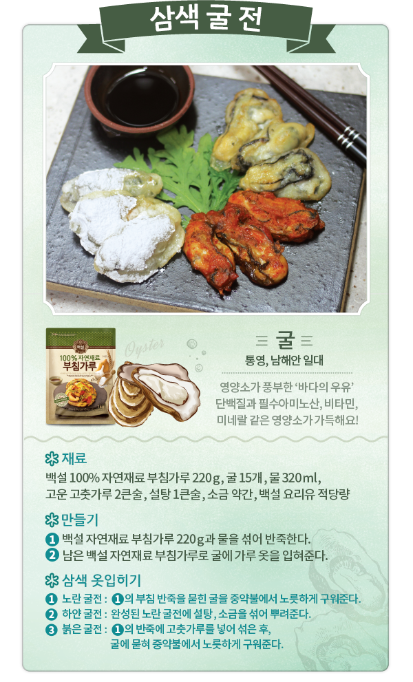
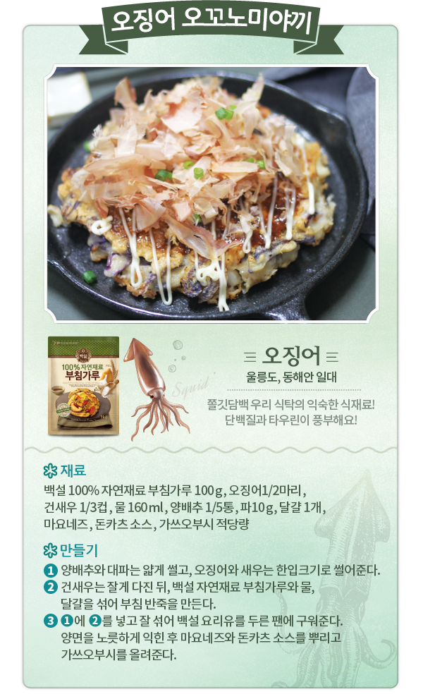

겨울바다 내음을 담은 신선한 제철 해산물로 만든 레시피를 확인하고,
가장 먹고 싶은 레시피를 댓글로 남겨주시면 추첨을 통해 푸짐한 상품을 드립니다.
엄선된 5가지 자연재료로 만들어 신선한 제철 식재료의 맛을 더욱 잘 살려주는
백설 100% 자연재료 부침, 튀김가루는
맛있는 부침, 튀김 요리를 만드는 데 꼭 필요한 엄선된
5가지 자연재료 외에는 아무것도 넣지 않았습니다.
자연재료 부침가루 : 밀가루, 양파가루, 마늘가루, 천일염, 흑후추가루
자연재료 튀김가루 : 밀가루, 양파가루, 마늘가루, 천일염, 쌀가루
제철 해산물의 맛을 가장 잘 살려주는 자연재료 부침, 튀김가루와 함께 우리집 식탁에서 겨울바다, 미식여행을 떠나세요!
겨울바다, 미식여행 맛지도 안에서 가장 맛있어 보이는 레시피를 댓글로 남겨주세요.
댓글을 남겨주신 분들 중 추첨을 통해 100분께 겨울바다 자연재료 KIT를 드립니다.
겨울바다 자연재료 KIT 구성 : 백설 100% 자연재료 부침가루, 백설 100% 자연재료 튀김가루, 백설 요리유, 마트 2만원 상품권)
경품 : 겨울바다 자연재료 KIT(100명)
겨울바다 자연재료 KIT로 맛있는 자연재료 레시피를 뽐내주세요.
우수후기에 당첨되신 1분께는 여행상품권을, 5분께는 여행 캐리어를 드립니다.
우수후기 당첨자 발표 : 2016년 1월 13일
경품 내역
경품은 사정에 의해 변경 될 수 있으며, 5만원 초과 경품 당첨 시 제세공과금 22%는 고객부담입니다.
매일 응모할수록 당첨확률 UP! 레시피를 SNS에 많이 공유 할수록 당첨확률 UP!

굴-통영, 남해안 일대
영양소가 풍부한 '바다의 우유'
단백질과 필수 아미노산, 비타민,
미네랄 같은 영양소가 가득해요!
삼색 굴 전
재료
만들기
삼색 옷입히기

오징어-울릉도, 동해안 일대
쫄깃담백 우리 식탁의 익숙한 식재료!
단백질과 타우린이 풍부해요!
오징어 오꼬노미야끼
재료
만들기